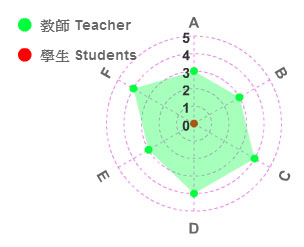
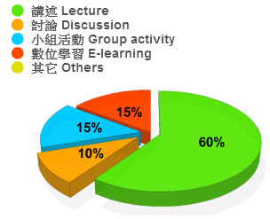

- 學年/學期 Academic Year/Semester
- 103學年 第 2 學期
- 課程名稱 Course Name
781007-001
- (中 Ch.)Ｗeb程式設計
(英 Eng.)Web Programming
- 授課教師 Instructor
- 余能豪
- 修別
- 群修
- 學分數No. of Credits
- 3.0
- 備註 Note
- 限學程同學方得修習。
- 課程目標 Course objectives
本課程旨在介紹WWW的基本運作原理並以其為平台開發應用程式，包含HTML5/CSS3動態網頁製作、網頁物件模型(DOM)、JavaScript程式設計與雲端應用等。
- 課程大綱 Course Description
本課程涵蓋網路平台之最新技術如HTML5, CSS3, Javascript, JSON, JQuery等，並介紹國內外網站及網路行銷活動範例，培養學生網頁應用程式之開發能力及資訊架構設計能力，最後能設計兼具功能與美感的動態網站。
- 上課進度 Class Schedule
- Course Introduction / Git
- HTML5
- CSS3 (I)
- CSS3 (II)
- IA - Analysis
- Grid system / bootstrap
- IA presentation
- Responsive design
- Midterm
- Javascript (I) / DOM
- Javascript (II) / JQuery
- Parse / JSON
- 校慶運動會
- Heroku / Node.js
- Websocket
- Guest speaker
- Google Analytics
- Final demo
- 課程要求/評分標準 Course requirements/Grading standards
課堂作業(35%) 、期中作業(20%)及期末實作成品成果展示(30%)
- 參考書目 Textbook & references
（為維護智慧財產權，請務必使用正版書籍）
. Eric Freeman, Elisabeth Robson(2011), Head First HTML5 Programming: Building Web Apps with JavaScript, O'Reilly
. Crockford Douglas, JavaScript: The Good Parts, O'Reilly
- 本課程附件 Course attachments
N/A
- 核心能力分析圖 Core competence analysis chart

學生自評核心能力填答率: 0% (0/40)
- 能力項目說明：
-
具備發現與解決問題之能力
- 具備敘事與美學能力
- 具備科技研發與系統開發能力
- 具備團隊合作力
- 具備人文關懷與社會參與情操
- 具備企劃整合與溝通能力
- 授課方式比例圖 Teaching approach pie chart

表單